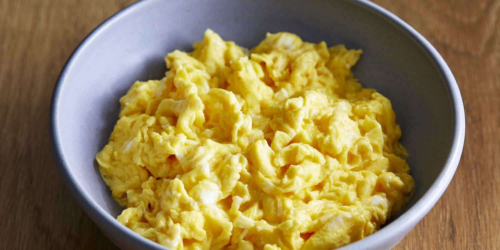

Scrambled eggs

Ingredients
- 2 large eggs
- 6 tbsp cream milk
- About 2 tbsp of butter
- Salt
Preparation
-
Lightly whisk the eggs, the milk and a pinch of salt until the mixture is
integrated.
-
Heat a small pan for about two minutes, add the butter and let it melt.
Don't allow the butter to brown, or it will discoulour the eggs.
-
Pour in the egg mixture and let it sit (without stirring) for 20 seconds.
Stir with a wooden spoon, lifting and folding it over the bottom of the pan.
-
Let it sit for another 10 seconds, then stir and fold again.
-
Repeat until the eggs are softly set. Remove from the heat and leave for a
moment to finish cooking.
-
Give a final stir and serve the scramble without delay.
Recipe taken from
BBC good food.